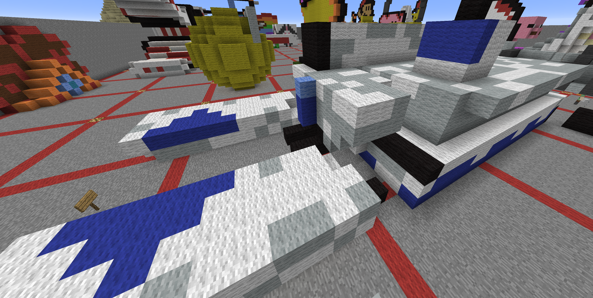
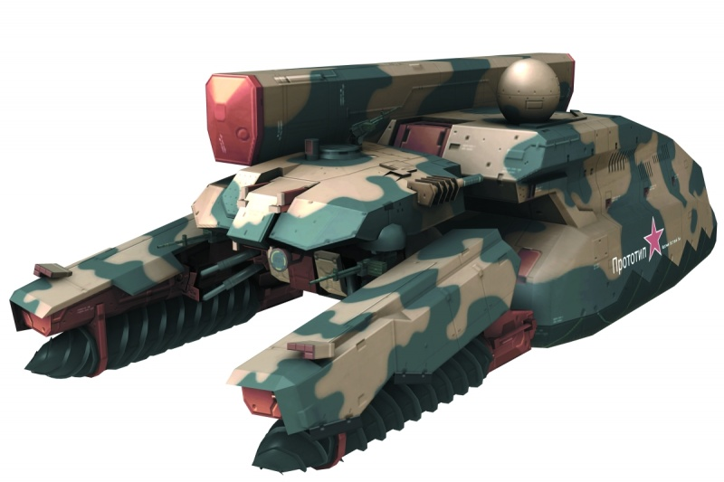
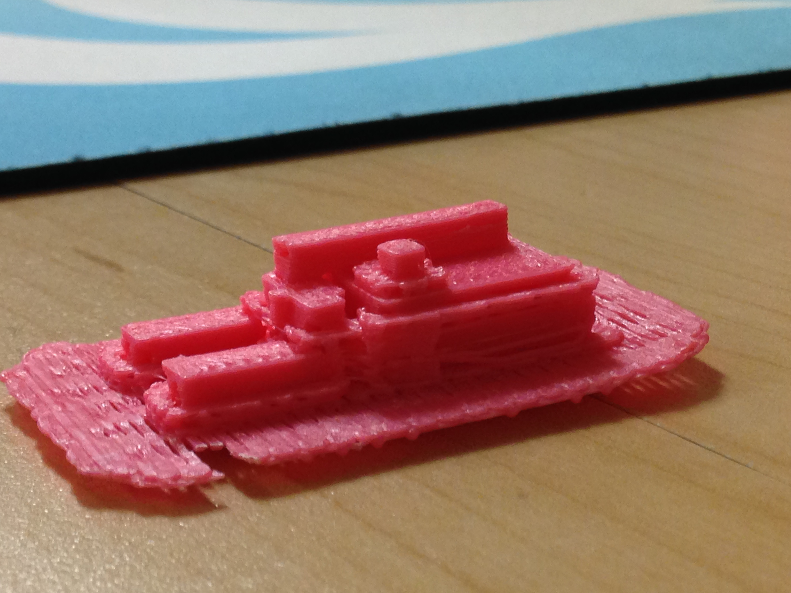
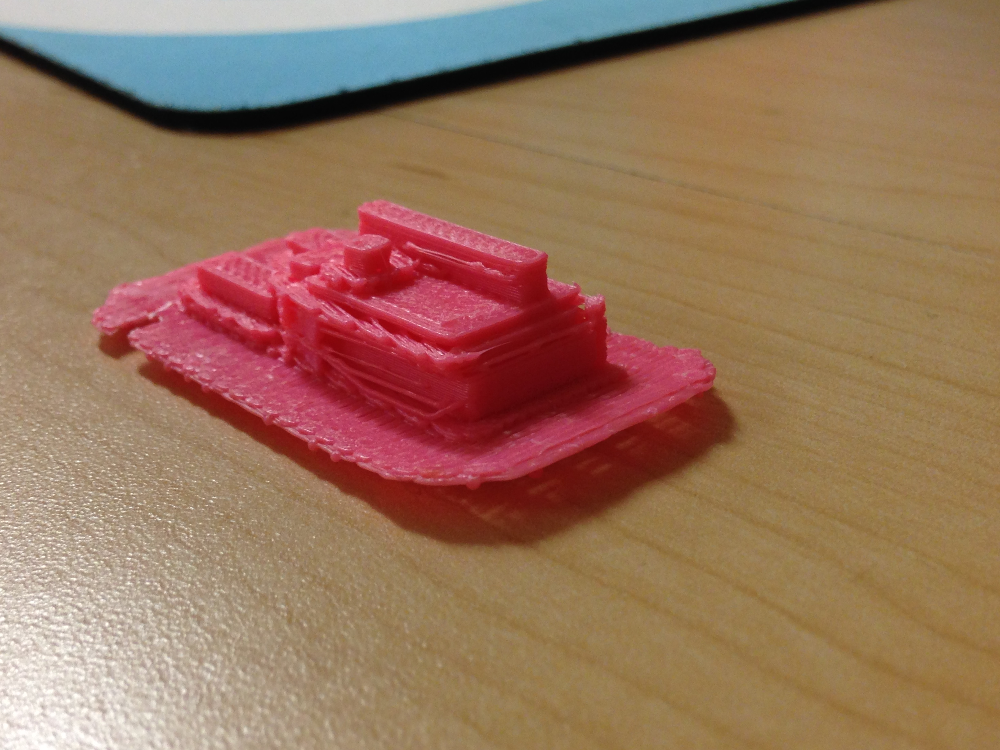

For the Minecraft project, I have done my best to re-create the mighty Shagohod from Metal Gear Solid 3: Snake Eater. It is a massive screw-propelled tank that has the ability to fire nukes halfway across the world as long as it has a flat piece of ground to use as a runway. For self-defense against infantry, it uses two heavy machine guns.

For the amount of detail put into it, I think it turned out to be surprisingly good when I 3D printed this hulking monstrosity. Although I was not able to incorporate any of the Shagohod's curved edges because if Minecraft's blocky limitations, I was able to get the shape similar enough to the point it was mostly recognizable, at least from my perspective. This was my first time actually trying to make something in Minecraft so it was a bit of a challenge trying build the Shagohod with just cubes. As a result, I had to leave out some of the the finer details like the Russian on the side or the little points on the drill-bits. This project was a very unique experience because I also learned to use a 3D printer and watch in awe as it extrudes strings of melted plastic to form the desired shape. While it didn't come out perfectly it was good enough to satisfy myself at the very least.


{kind=link}